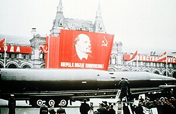

საბჭოთა სოციალისტური რესპუბლიკების კავშირი (შემოკლებით სსრკ, საბჭოთა კავშირი, სსრ კავშირი, საბჭოეთი) — სოციალისტურ-ცენტრალიზებულად მართული მრავალეროვანი სახელმწიფო აღმოსავლეთ ევროპაში, კავკასიაში, ჩრდილო და შუა აზიაში. საბჭოთა კავშირი 1922 წლის 30 დეკემბერს დაარსდა და 1991 წლის 26 დეკემბერს უზენაესი საბჭოს გადაწყვეტილებით დაიშალა. კავშირის დაშლის შემდეგ სახელმწიფოს საჯარო-კანონებრივი ვალდებულებანი რუსეთის საბჭოთა ფედერაციულ სოციალისტურ რესპუბლიკას დაეკისრა (მოგვიანებით რუსეთის ფედერაციას).
საბჭოთა კავშირი ფორმალურად იყო მოკავშირე რესპუბლიკების ფედერალური კავშირი, ხოლო ფაქტობრივად – ცენტრალიზებულად (მოსკოვიდან) მართული და რუსეთის საბჭოთა ფედერაციული რესპუბლიკის მიერ დომინირებული სახელმწიფო. ასევე ფორმალურად ხელისუფლება შედგებოდა „დემოკრატიულად“ არჩეული საბჭოებისა და პარლამენტისგან, რეალური ძალაუფლება კი საბჭოთა კავშირის კომუნისტური პარტიის ხელმძღვანელობას ჰქონდა, რომელიც განსაკუთრებით სტალინის მმართველობისას — ტოტალიტალურად, ხოლო მის შემდეგ — დიქტატორულად მართავდა ქვეყანას. სსრკ-ის დაშლამდე გორბაჩოვის მიერ დაწყებულ ე. წ. „გარდაქმნის“ პერიოდში სახელმწიფოში რეალური დემოკრატიის შემოღების მცდელობა განხორციელდა, რამაც მხოლოდ მის დაშლას შეუწყო ხელი. საბჭოთა კავშირის ხელისუფლებას სახელმწიფოში არა მხოლოდ საკანონმდებლო, აღმასრულებელი და სასამართლოებრივი ფუნქცია ჰქონდა, არამედ მის ეკონომიკასაც განაგებდა. ქვეყნის ყველა ფუნდამენტალურ პოლიტიკურ გადაწყვეტილებებს იღებდა საბჭოთა კავშირის კომუნისტური პარტიის პოლიტიკური ინსტიტუციები. 80-იანი წლების ბოლოს საბჭოეთის სახელმწიფო სტრუქტურა თეორიულად უკვე დასავლეთის ქვეყნების პოლიტიკურ სისტემას დაემსგავსა. ასე მაგალითად, კონსტიტუცია სახელმწიფო ორგანოებს განსაზღვრავდა და მოქალაქეებს მათ პოლიტიკურ და სამოქალაქო უფლებებს გარანტირებდა. 1) სახელისუფლებო ძალაუფლება, 2) სახალხო დეპუტატთა საბჭო და 3) მმართველი უზენაესი საბჭო – ეს სამი ორგანო სახალხო წარმომადგენლობის სახით საბჭოთა ხალხის სუვერენიტეტს განასახიერებდა. პრეზიდიუმს უზენაესი საბჭო ირჩევდა, რომლის თავმჯდომარე სახელმწიფოს მეთაურიც იყო და სახალხო კომისართა საბჭოსაც განაგებდა (მოგვიანებით სსრკ-ის მინისტრთა საბჭო, რომელიც აღმასრულებელი ორგანოს ფუნქციას ასრულებდა). სახალხო კომისართა საბჭოს თავმჯდომარე, რომლის არჩევა სახელისუფლებო ძალაუფალთა მიერ დადასტურებული უნდა ყოფილიყო, საბჭოთა ხელისუფლების ხელმძღვანელი ხდებოდა. საკონსტიტუციო იურიდიული ორგანო წარმოადგენდა სასამართლოთა სისტემას, რომელსაც უზენაესი სასამართლო ხელმძღვანელობდა. უზენაესი სასამართლო სახელისუფლებო ორგანოების კანონიერების მეთვალყურეობას ახორციელებდა. 1977 წლის კონსტიტუციის მიხედვით ქვეყანას გააჩნდა ფედერალური სტრუქტურა, რომელიც თითოეული მოკავშირე რესპუბლიკის სუვერენულ უფლებებს გარანტირებდა (მაგალითად, ეთნიკურ უმცირესობათა პოლიტიკურ საკითხებში). პრაქტიკაში კი — თითოეული სახელმწიფო ორგანოს უმეტეს ამოცანებს წყვეტდა ერთადერთი ლეგალური პარტია – საბჭოთა კავშირის კომუნისტური პარტია (სსრკ-ის კომპარტია). კომპარტია იღებდა უმთავრეს ფუნდამენტალურ და პოლიტიკურ ორიენტირებასთან დაკავშირებულ გადაწყვეტილებებს, ხოლო ხელისუფლება, თავად რამის დაკანონების გარეშე, ამ გადაწყვეტილებებს ასრულებდა. მთელი რიგი მექანიზმებისა მუშაობდნენ იმაზე, რომ ხელისუფლების ყველა ორგანოს კომპარტიის გადაწყვეტილებები მიეღო და განეხორციელებინა ისინი. მიუხედავად იმისა, რომ საბჭოთა მოქალაქეებს არჩევნებში გარკვეული კანდიდატისთვის ხმის მიცემის თავისუფლება ჰქონდათ, ეს კანდიდატი საბჭოთა კავშირის კომუნისტური პარტიის წევრი უნდა ყოფილიყო, და ამასთანავე არჩევნებში მონაწილე კანდიდატები თავად პარტიის მიერვე იყვნენ წამოყენებულნი, რომლებიც მისი ხელმძღვანელობის მიმართ ლოიალურად განწობილნი უნდა ყოფილიყვნენ. სახელმწიფო დეპარტამენტებში მომუშავე პირები კომუნისტური პარტიის უშუალო მეთვალყურეობის ქვეშ იმყოფებოდნენ, რაც გამორიცხავდა მათი მხრიდან საერთო ოფიციალური პოლიტიკური ხაზიდან გადახვევის შესაძლებლობას. აღმასრულებელი ორგანოს – მინისტრთა საბჭოს – უმთავრესი ამოცანა იყო ეკონომიკის მართვა. მინისტრთა საბჭო შედგებოდა კომუნისტური პარტიის მიმართ ლოიალურად განწყობილი პოლიტიკოსებისგან. საბჭოს თავმჯდომარე საბჭოთა კავშირის კომუნისტური პარტიის ცენტრალური ინსტანციის – პოლიტბიუროს – წევრიც იყო. ხშირად ამ თავმჯდომარედ თავად კომპარტიის გენერალური მდივანივე ხდებოდა. თავმჯდომარეს დანარჩენ მინისტრთა მიმართებაში დომინანტური პოზიცია ეკავა. 1988 წლის კონსტიტუციის მიხედვით ქვეყნის უზენაეს ხელისუფლებას სახალხო დეპუტატთა საბჭო წარმოადგენდა. ამ საბჭოს უმთავრესი ამოცანა იყო სახელისუფლებო კრების ანუ უზენაესი საბჭოს და მისი თავმჯდომარის არჩევა, რომელიც ამასთანავე სახელმწიფოს მეთაური ხდებოდა. მიუხედავად იმისა, რომ სახალხო დეპუტატთა საბჭოს თეორიულად კანონების შემოღების უფლება ჰქონდა, იგი იშვიათად იკრიბებოდა, და ისიც იმისთვის, რომ კომპარტიის, მინისტრთა საბჭოსა და უზენაესი საბჭოს კანონმდებლობისთვის მხარი დაეჭირა. უზენაეს საბჭოს სსრკ-ის ძალაში მყოფ კანონთა ინტერპრეტაციისა და მინისტრთა საბჭოსთან ერთად დეკრეტების მიღების უფლება ჰქონდა, თუ კანონებში რამე გაურკვევლობები წარმოიქმნებოდა. სამართლებრივი სისტემა დასავლეთის ქვეყნებისგან ძლიერ განსხვავდებოდა: თუ დასავლეთის სისტემაში ბრალდებულს მოსამართლის წინაშე ადვოკატი იცავს, ხოლო პროკურორი ბრალდებას უყენებს, — საბჭოთა სასამართლოში მოსამართლე როგორც ადვოკატთან, ასევე ბრალმდებელთან ერთად მუშაობდა. საბჭოთა გაგებით ასეთი სისტემა ჭეშმარიტების ძიებას ემსახურებოდა, სინამდვილეში კი — კორუპციას უხსნიდა ხელს.
